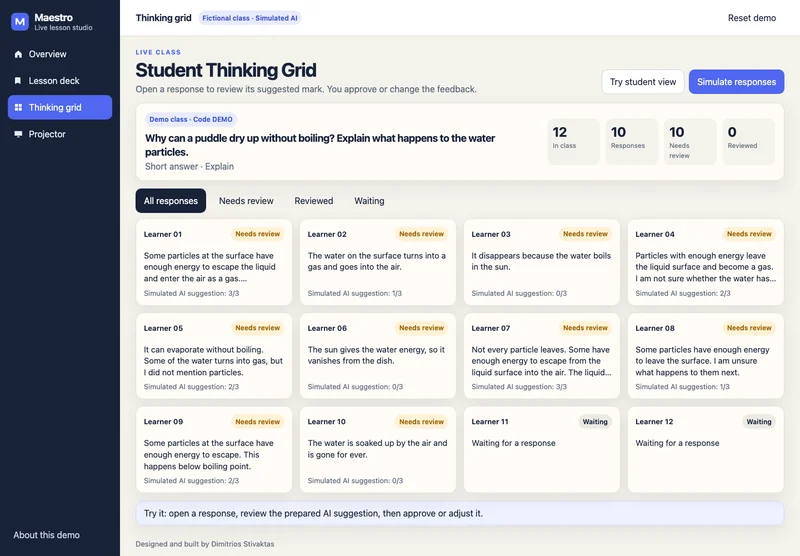

Enlarge screenshot.Source: Maestro
Student Thinking Grid
See responses together and filter by Needs review, Reviewed or Waiting. Open an answer to compare it with the model and a prepared criterion-based suggestion.
Teacher control. The teacher can approve or change the mark and edit the feedback. The demo uses twelve numbered fictional learners.
Open a response, inspect its evidence, and approve or change the feedback.